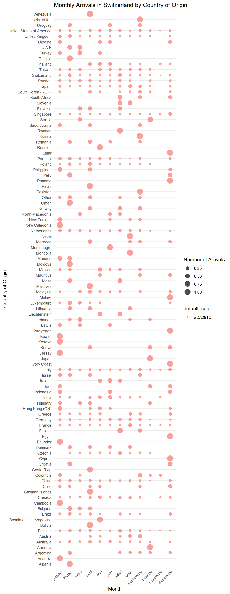

Code
source(here::here("scripts", "setup.R"))
data <- read.csv(here("data", "TMS_dataset_Vaud_20240314_FINAL.csv"),
sep = ",")source(here::here("scripts", "setup.R"))
data <- read.csv(here("data", "TMS_dataset_Vaud_20240314_FINAL.csv"),
sep = ",")#Plot frequency
ggplot(df_sums_df, aes(x = Column, y = Spent)) +
geom_bar(stat = "identity", fill = "skyblue") +
geom_text(aes(label = paste0("CHF ", round(Spent, 0))), vjust = -0.5, size = 3, color = "black") +
labs(title = "Average CHF spent by group type", x = "Traveled with", y = "Amount spent / person")Here we have calcuated the average total CHF spent during a trip to Vaud, per person, depending on who the respondent has traveled with.
# Type of groups x Country of origin
# Create bin columns for top 5 countries
data$swiss <- ifelse(data$F05_02 == "Schweiz", 1, 0)
data$french <- ifelse(data$F05_02 == "Frankreich", 1, 0)
data$british <- ifelse(data$F05_02_ENG == "United Kingdom", 1, 0)
data$german <- ifelse(data$F05_02 == "Deutschland", 1, 0)
data$american <- ifelse(data$F05_02_ENG == "United States of America", 1, 0)
# Add columns to df
df$swiss <- data$swiss
df$french <- data$french
df$british <- data$british
df$german <- data$german
df$american <- data$american
# Create new df
column_names <- c("column_name", "group_name", "swiss", "french", "british", "german", "american")
rows <- c("Alone", "Partner", "Friends", "Children", "Other family",
"Unknown people (group)", "Dog", "Other pet(s)", "Only with partner")
nations_groups <- data.frame(matrix(ncol=length(column_names), nrow = length(rows)))
colnames(nations_groups) <- column_names
nations_groups$group_name <- rows
nations_groups$column_name <- colnames(df)[1:nrow(nations_groups)]
# Initialize a list to store sums for each nation
sums_list <- list()
# Iterate over each row in nations_groups dataframe
for (i in 1:nrow(nations_groups)) {
# Get the column name and group name from the current row
column_name <- nations_groups[i, "column_name"]
group_name <- nations_groups[i, "group_name"]
# Calculate sum for each nation
sums <- c(
sum(df[df$swiss == 1, column_name], na.rm = TRUE),
sum(df[df$french == 1, column_name], na.rm = TRUE),
sum(df[df$british == 1, column_name], na.rm = TRUE),
sum(df[df$german == 1, column_name], na.rm = TRUE),
sum(df[df$american == 1, column_name], na.rm = TRUE)
)
# Add sums to the list
sums_list[[i]] <- c(group_name, column_name, sums)
}
# Convert the list to a dataframe
sums_df <- as.data.frame(do.call(rbind, sums_list))
# Add column names to the dataframe
colnames(sums_df) <- c("group_name", "column_name", "swiss", "french", "british", "german", "american")
# Transform to percentages
sums_df$swiss <- round(100*as.numeric(sums_df[, "swiss"])/sum(df$swiss == 1), 2)
sums_df$french <- round(100*as.numeric(sums_df[, "french"])/sum(df$french == 1), 2)
sums_df$british <- round(100*as.numeric(sums_df[, "british"])/sum(df$british == 1), 2)
sums_df$german <- round(100*as.numeric(sums_df[, "german"])/sum(df$german == 1), 2)
sums_df$american <- round(100*as.numeric(sums_df[, "american"])/sum(df$american == 1), 2)
# Print the resulting dataframe
#print(sums_df)
# Plot group types by nationHere we can see the group types of travelers (Alone, with partner, with children, etc.) For each of the top 5 nations of origin of tourists.
ggplot(sums_df, aes(x = group_name, y = swiss)) +
geom_bar(stat = "identity", fill = "skyblue") +
ylim(0, 100) +
labs(title = "Group types for Swiss tourists", x = "Traveled with", y = "Percentage") +
geom_text(aes(label = paste0(swiss, "%")), vjust = -0.5, size = 3)
Swiss tourists are more likely than other nations to travel with children. They are also most likely to be traveling with a partner. This suggests that they are more likely to be visiting as a family than other tourists.
ggplot(sums_df, aes(x = group_name, y = french)) +
geom_bar(stat = "identity", fill = "skyblue") +
ylim(0, 100) +
labs(title = "Group types for French tourists", x = "Traveled with", y = "Percentage") +
geom_text(aes(label = paste0(french)), vjust = -0.5, size = 3)ggplot(sums_df, aes(x = group_name, y = british)) +
geom_bar(stat = "identity", fill = "skyblue") +
ylim(0, 100) +
labs(title = "Group types for British tourists", x = "Traveled with", y = "Percentage") +
geom_text(aes(label = paste0(british, "%")), vjust = -0.5, size = 3)
ggplot(sums_df, aes(x = group_name, y = german)) +
geom_bar(stat = "identity", fill = "skyblue") +
ylim(0, 100) +
labs(title = "Group types for German tourists", x = "Traveled with", y = "Percentage") +
geom_text(aes(label = paste0(german, "%")), vjust = -0.5, size = 3)
German tourists are the most likely of these countries to be traveling only with their partner, as a couple.
ggplot(sums_df, aes(x = group_name, y = american)) +
geom_bar(stat = "identity", fill = "skyblue") +
ylim(0, 100) +
labs(title = "Group types for American tourists", x = "Traveled with", y = "Percentage") +
geom_text(aes(label = paste0(american, "%")), vjust = -0.5, size = 3)
American tourists have by far the highest percentage of tourists traveling alone, as well as in a group of unknown people. This suggests they are more likely to be on a solo trip to Switzerland, and also be in an organised group tour with other strangers.